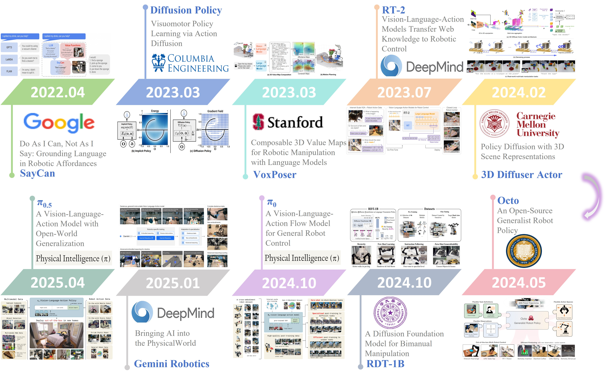
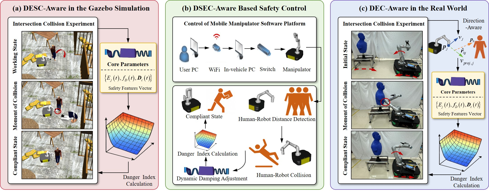
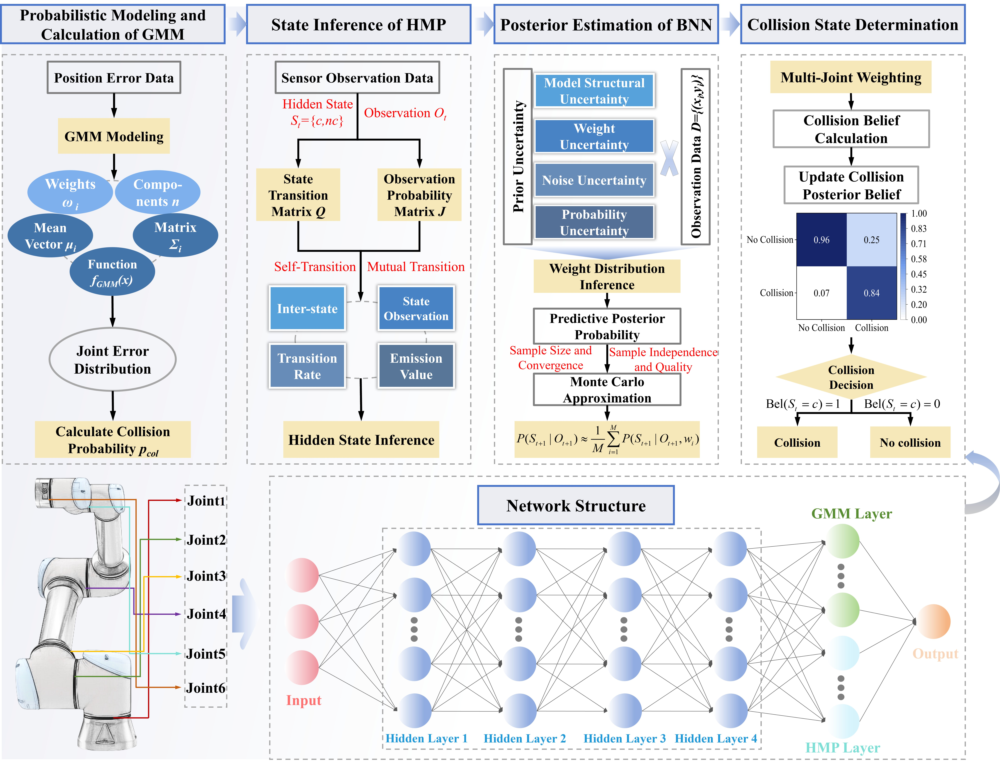

My research focuses on robotic manipulation through multimodal robot learning, helping robots understand the physical world and improving the robustness and generalization ability of it using limited data (simulation, teleoperation, and human video), pushing the limits of robotic performance.
Additionally, I have experience in human-robot safety interaction, including research on human and robot collision
detection and compliant control techniques.
Hemispheric Diffusion: A Compositional Generative Policy for Coordinated Bimanual Manipulation Yechen Fan,
Jinhua Ye,
Xianyou Ji,
Haibin Wu,
Gengfeng Zheng
and Huixin He
Under Review project page /
paper /
video /
code
BimanualShift: A Modular Transfer Framework for Generalizing Unimanual Policies to Bimanual Manipulation Yechen Fan,
Xianyou Ji,
Chenyang Song,
Huixin He,
Haibin Wu,
Jinhua Ye
and Gengfeng Zheng
Under Review project page /
paper /
video /
code
Tool-Action Comprehension: A Cross-Morphology Imitation Learning Framework for Bimanual Manipulation Yechen Fan,
Xinjie Zhang,
Jianghao Zhao,
Xiaohan Liu,
Haibin Wu,
Jinhua Ye
and Gengfeng Zheng
Under Review project page /
paper /
video /
code

Towards Industry 5.0: Emerging Trends in Dual-Arm Human-Robot Collaboration
Jinhua Ye,
Yechen Fan,
Gengfeng Zheng,
Houde Dai,
Chenyang Song,
Haibin Wu
and Yu Zhang
Biomimetic Intelligence and Robotics, (JCR: Q1, IF: 5.4), 2026
paper

DSEC-Aware: Post-Collision Safety Control of Mobile Manipulators via Directional Energy Constraints
Jinhua Ye,
Yechen Fan,
Linxin Hong,
Haibin Wu
and Gengfeng Zheng
IEEE Robotics and Automation Letters (RA-L), (JCR: Q1, IF: 5.3), 2025
paper

A Bayesian Framework Based on Gaussian Mixture Model and Hidden Markov Process for Collision Detection in Cobots
Jinhua Ye,
Yechen Fan,
Haibin Wu,
Xin Zhang,
Jianghao Zhao,
Xinjie Zhang
and Gengfeng Zheng
IEEE Robotics and Automation Letters (RA-L), (JCR: Q1, IF: 5.3), 2025
paper /
video
{kind=link}